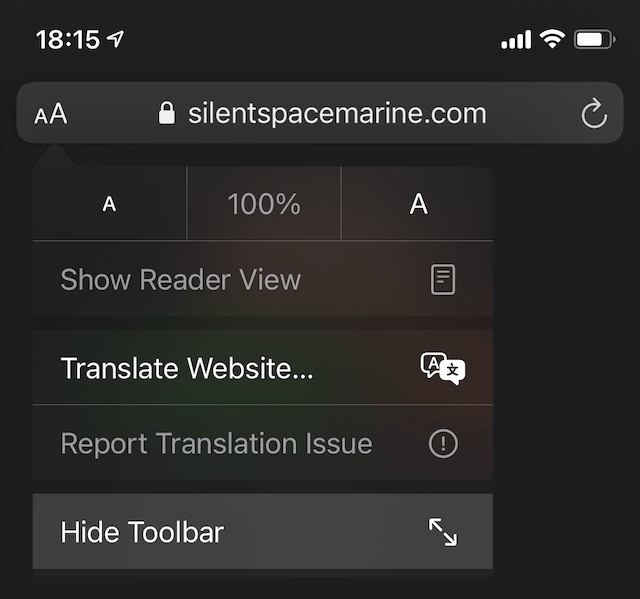

FOSS-BU
ARENA
BROWSER EDITION 쨌 2 PLAYERS
For a better mobile experience, click "Hide Toolbar" in the URL toolbar

Create room
Explore the arena
Have a room code?
Join room
FOSS-BU Arena
Create a room, share the code, and play together.